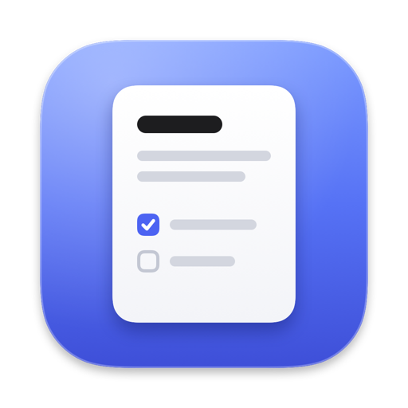
A calm home for your notes, tasks, calendar and projects — built on a folder of plain Markdown files.
LP turns any folder of Markdown files on your Mac into a calm, organised workspace for notes, tasks, a calendar and project boards.
Point LP at a folder and it becomes your workspace. Inside it you get:
Everything LP shows is an ordinary text file in the folder you chose. There is no database, no account and nothing to export:
.md file. Folders in LP are folders on your Mac.Each chapter covers one part of LP. The screenshots use a sample workspace; yours will show your own notes. Menu commands are written like File › New Page and keys like ⌘ N.
Install LP, open it for the first time, and choose the folder that becomes your workspace.
LP-1.0.1.zip, for example — from the release marked Latest on LP's Releases page: github.com/LTF-Git-Dev/local-productivity/releasesReleases marked Pre-release are betas: new versions published for testing before they become official. Install one only if you want to help try it out.
You can also build LP yourself: open Local Productivity.xcodeproj in Xcode 27 and press ⌘ R.
LP looks for a new version on its Releases page once a day. When there is one, it shows what's new and asks you first: click Install and Restart, and LP downloads it, puts it in place of the old one and opens again — your notes and settings stay as they are. Later asks again tomorrow; Skip This Version waits for the next one.
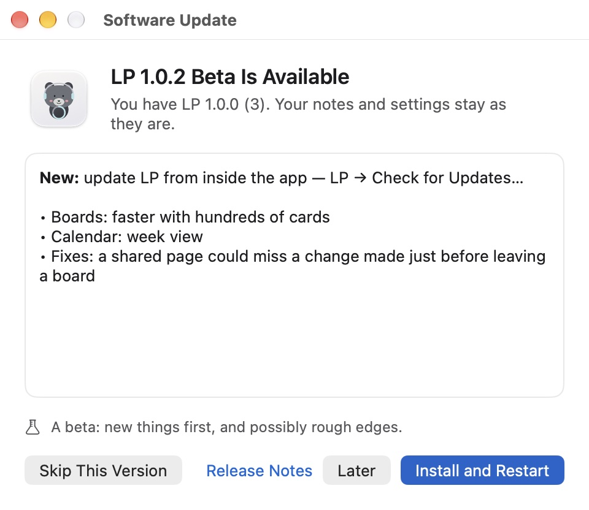
The first time LP opens, it asks for a folder. Click Choose a Folder… and pick any folder — an Obsidian vault, a folder of notes, or a new empty folder. LP remembers it, and opens it again next time.
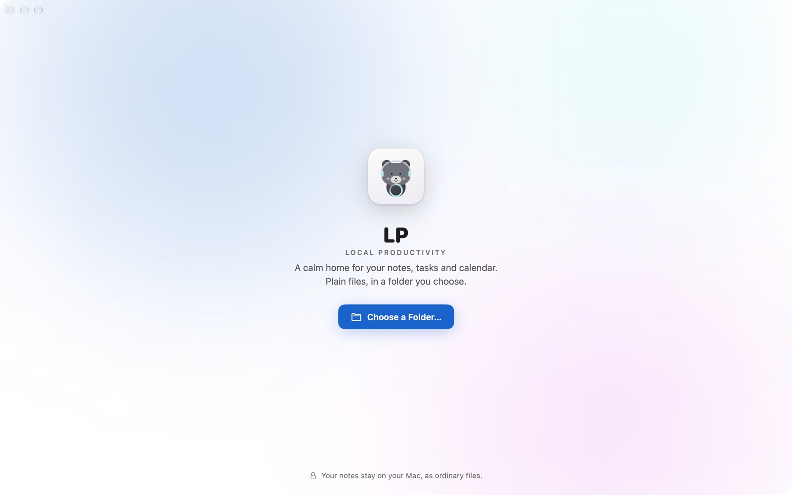
To switch to another folder later, click the workspace name at the top of the sidebar, or choose File › Open Workspace… (⌘ O).
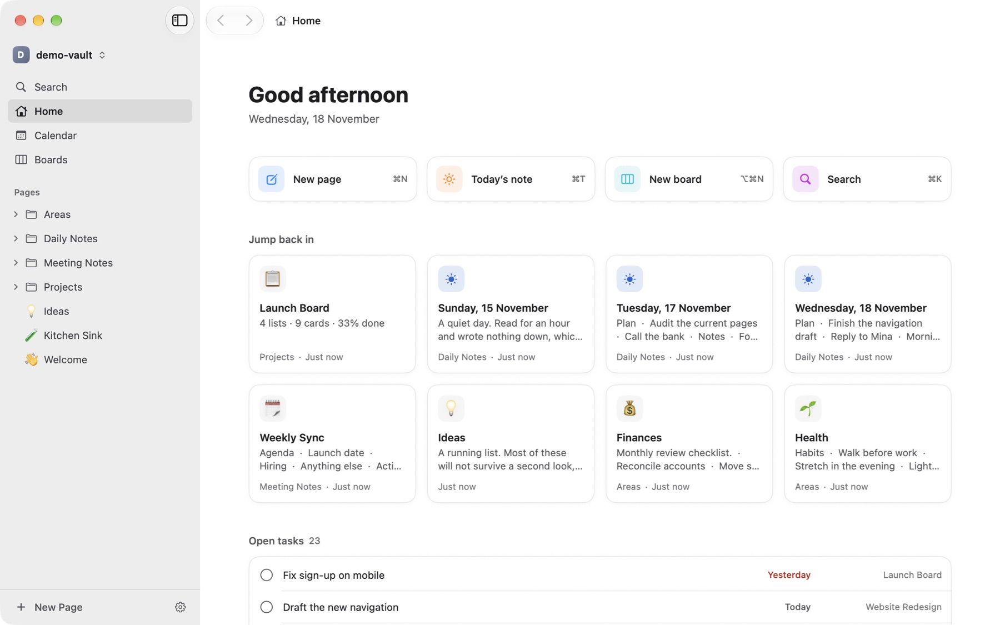
Pages look like finished documents while you write them. You type naturally; LP takes care of the formatting.
Press ⌘ N, click New Page at the bottom of the sidebar, or hover a folder in the sidebar and click its +. Type a title, press Return, and start writing. The title is the file's name. Hover above the title and click Add icon to give the page an emoji.
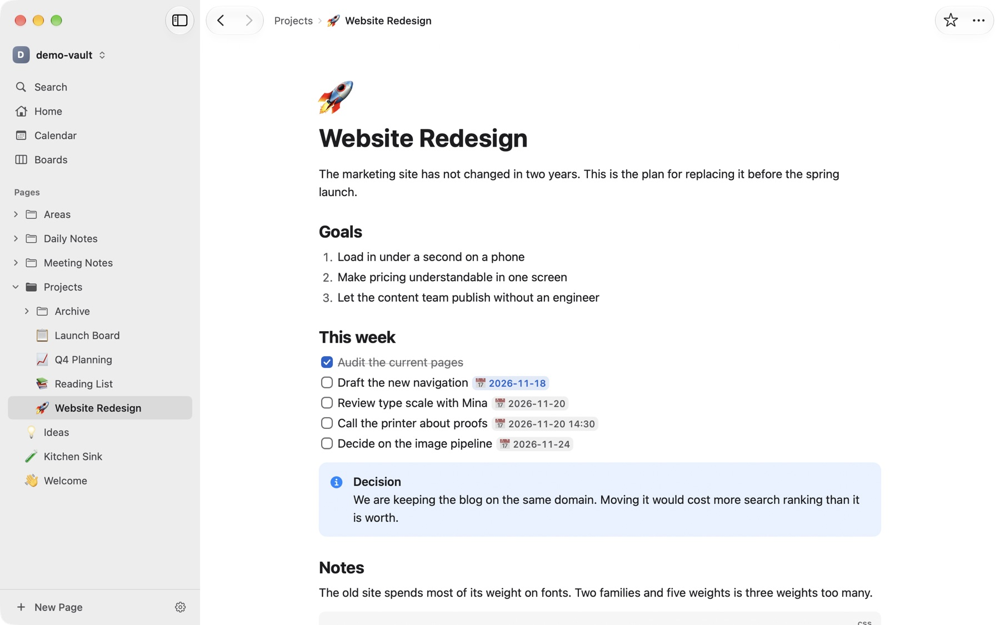
Select text and a small bar appears above it: bold, italic, strikethrough, code, highlight and link. The usual shortcuts work too — ⌘ B, ⌘ I, and ⌘ K for a link.
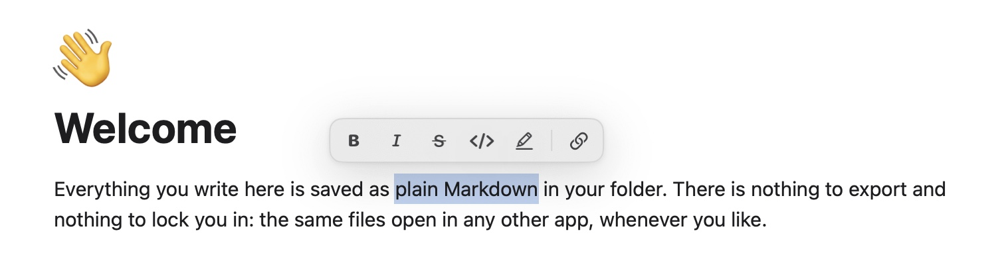
Markdown still works as a way of writing: type the symbols and they turn into formatting as soon as you've finished.
| Type | To get |
|---|---|
# then a space (or ##, ###…) | A heading (level 1, 2, 3…) |
- then a space | A bulleted list |
1. then a space | A numbered list |
[] then a space | A to-do with a checkbox |
> then a space | A quote |
--- | A divider line |
**bold** · *italic* · ~~strike~~ | bold · italic · |
==highlight== · `code` | highlighted text · code |
[[ | A link to another page (pick it from the list) |
On an empty line, type / to choose any kind of block: text, headings, to-dos, lists, quotes, callouts, code, dividers and tables. Keep typing to filter the list, then press Return.
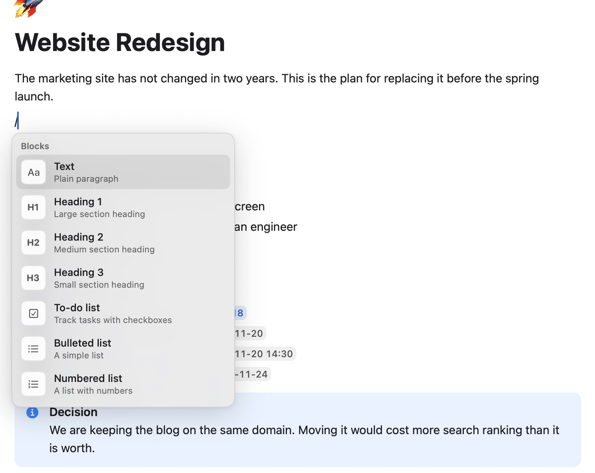
Hover to the left of any paragraph to see its handle. Click + to add a block below, or the handle to Turn Into another kind of block, Duplicate, Move Up, Move Down or Delete. ⌥ ⌘ 1–9 turn the current block into a heading, list, quote, code block or callout, and ⌥ ⌘ 0 back into text.
Start a line with [] and a space to make a to-do. Click the box — or press ⌘ Return — to tick it off. To give a to-do a due date, add it at the end:
| Write | Means |
|---|---|
Call Mina 📅 2026-11-20 | Due on 20 November (the Obsidian Tasks format) |
Call Mina due: 2026-11-20 | The same, without the emoji |
Call Mina 📅 2026-11-20 14:30 | Due at 2:30 PM — you'll be reminded then (also 2:30 pm or 9am) |
The date turns into a small chip: blue when it's today, orange when it's soon, red when it's overdue. Due to-dos appear on Home, in the calendar and in your reminders.
[[ and choose a page. Links to pages that don't exist yet are shown differently; clicking one creates the page.Folders, favourites and fast search keep everything within reach.
Click a folder to see its pages with a preview of each.
Press ⌘ K (or click Search). Type part of a title or any word in your notes; matching words are highlighted. Use ↑ ↓ and Return to open a result. If nothing matches, Create makes a new page with that name.
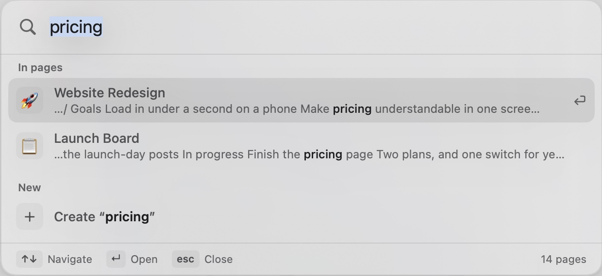
Press ⌘ T for today's note — a page named after the date (for example 2026-11-18) in your Daily Notes folder, created the first time you open it. Daily notes also appear in the calendar. Change the folder in Settings › General.
Your real calendars, with your daily notes and due tasks beside them. Changes you make in LP are saved back to the calendar they came from.
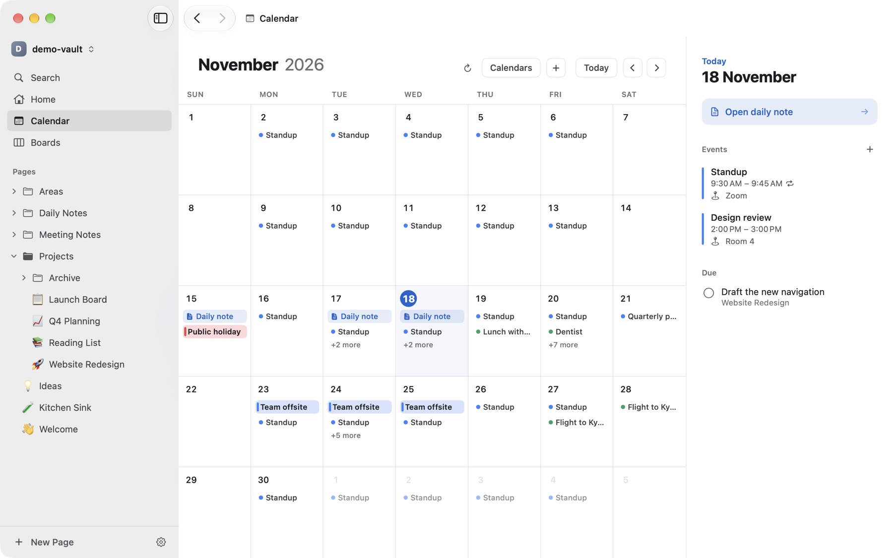
Open Settings › Calendars:
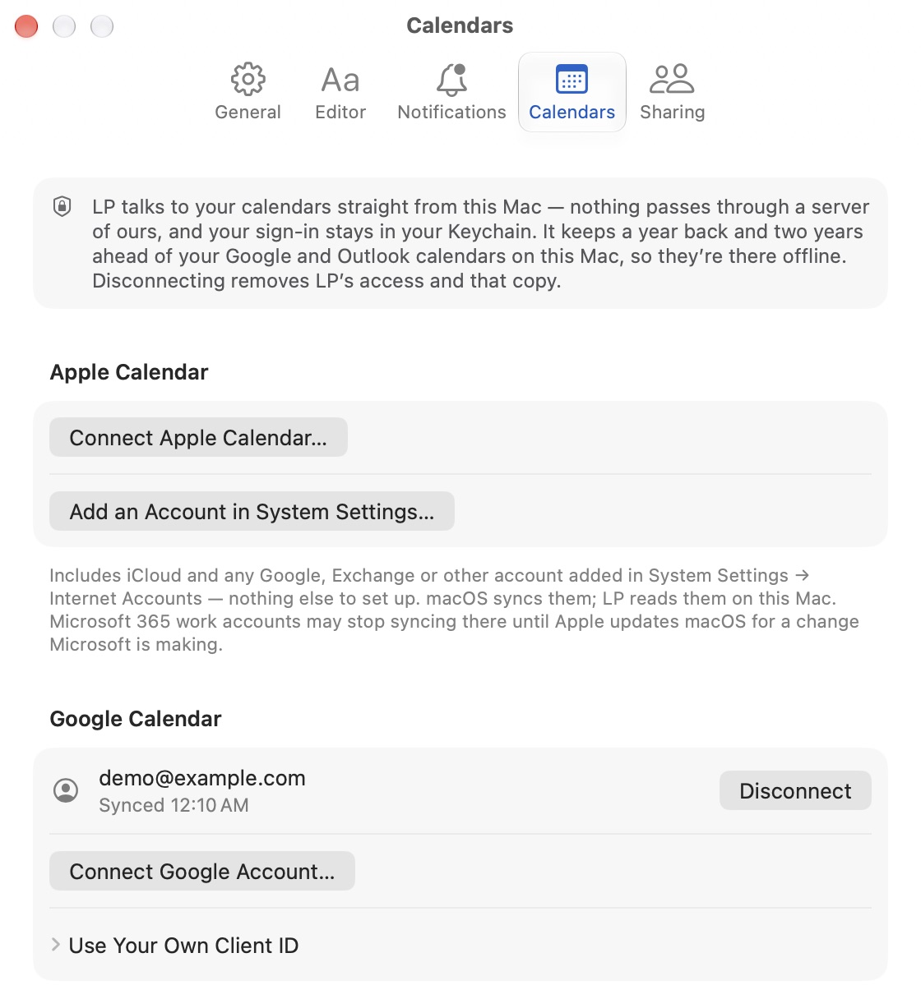
Select a day and click + to add an event. Choose the time, the calendar, a location and notes, then Add Event. Click an event to change or delete it. For a repeating event, LP asks whether to change just this one or the whole series.
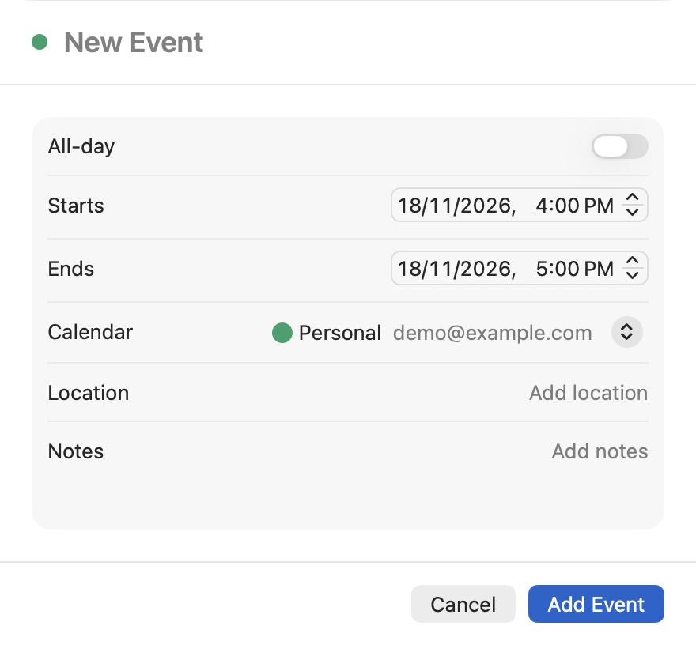
Boards are lists of cards — like Trello — for following a project from to-do to done. Make one for each project.
Click Boards in the sidebar (⌘ 3) to see every board with how far along it is, what's overdue and what's due soon. Sort by recently edited, name or progress. Right-click a board to rename it, show it in Finder or move it to the Trash.
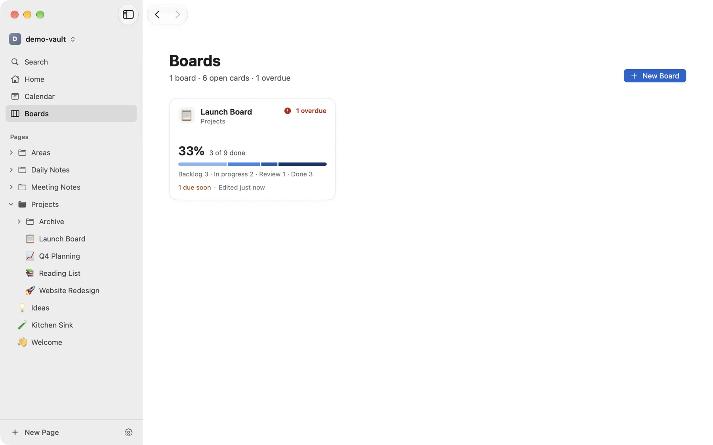
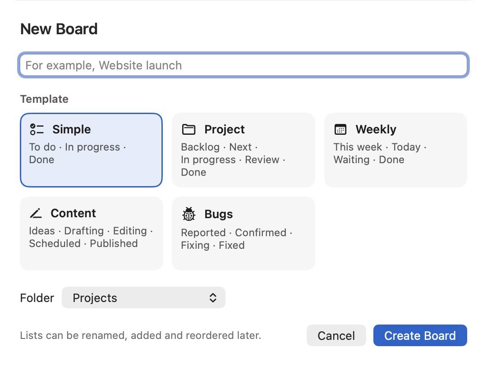
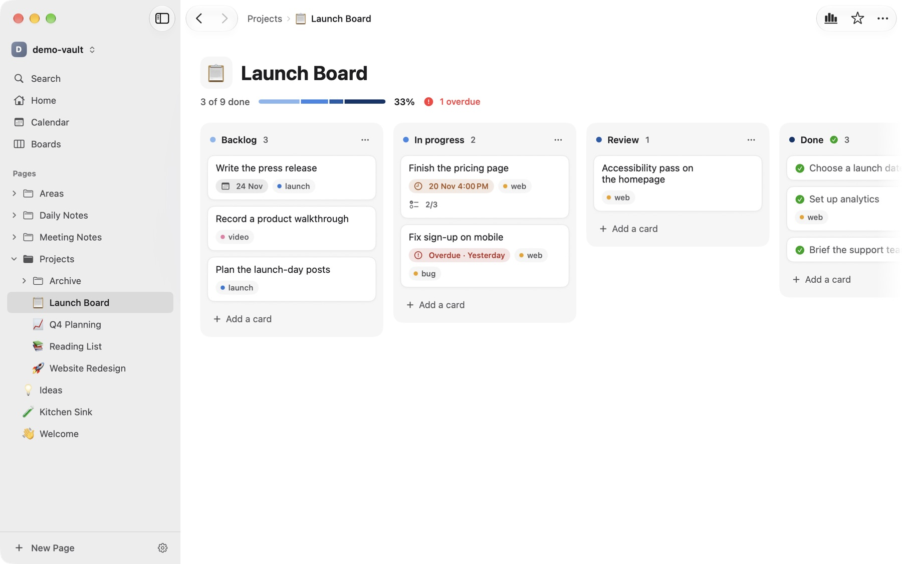
Click a card (or select it and press Return) to edit it:
- [ ] become a checklist, and the card shows its progress (for example 2/3).Only what you change in the sheet is saved, on top of the card as it is now — so notes someone changed in Obsidian meanwhile are kept. If the card can't be saved (for example, it was deleted elsewhere), the sheet says why and keeps what you typed.
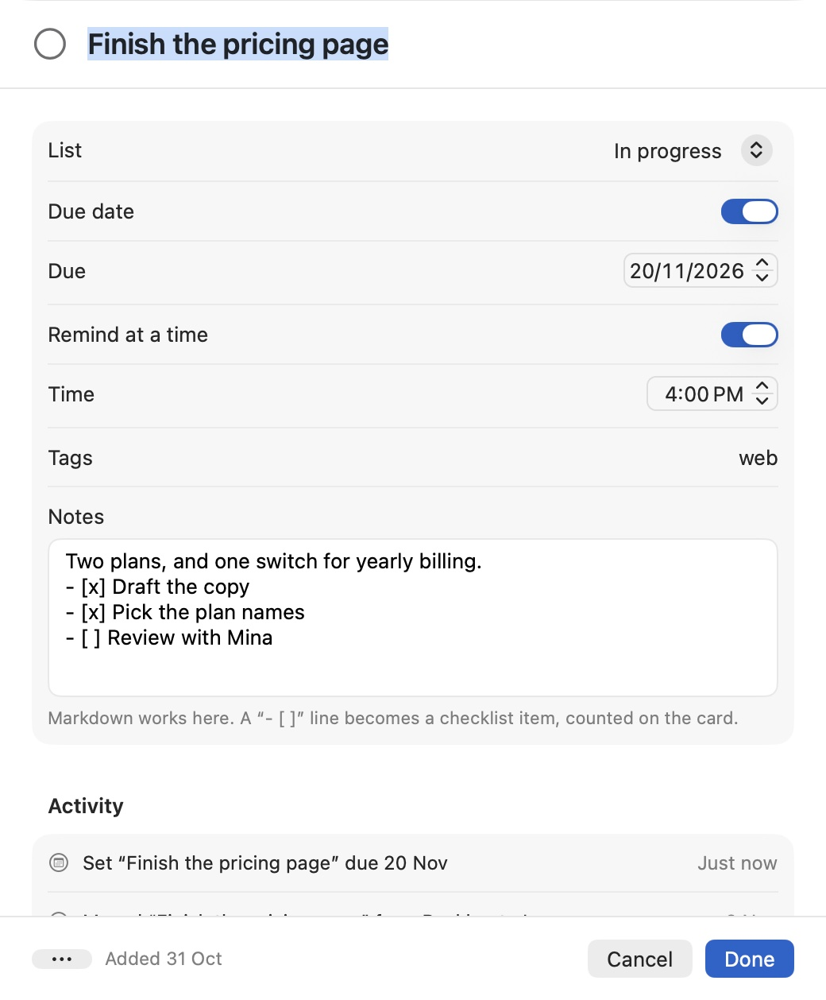
Click the chart button in the toolbar to open the progress panel: percent done, cards per list, overdue and due-soon cards, what got done this week, the average time to finish a card, a chart over time and a history of every change — including changes made in another app while LP was closed.
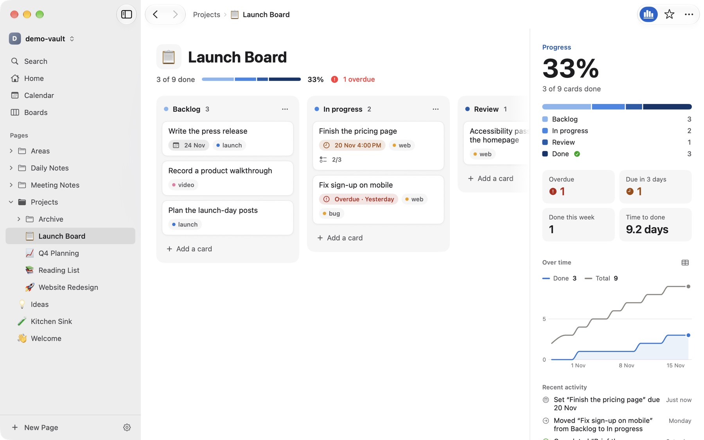
.lp folder in your workspace. Rename or move a board in LP and its history and shared page go with it (LP first adds one line, the board's ID, to the file). A board that has that line keeps its history when moved in Finder or Obsidian too, though its shared page then asks once to Keep It Updated From Here again. A copy of a board starts a history of its own.Share how a project is going as a live, read-only web page. Anyone with the link can open it on any device, without an account.
The shared page shows the board's lists, card titles, due dates, tags, progress and recent activity. Card notes are never shared. It is published through your own account — as a Google Doc in your Google Drive, or as a secret gist on GitHub. Either way it isn't listed or searchable, and can only be found with its link.
Google Drive — a Google Doc in your own Drive:
GitHub — a secret gist: create a token that can only make gists (Create a Token on GitHub opens the page) and paste it in Settings › Sharing.
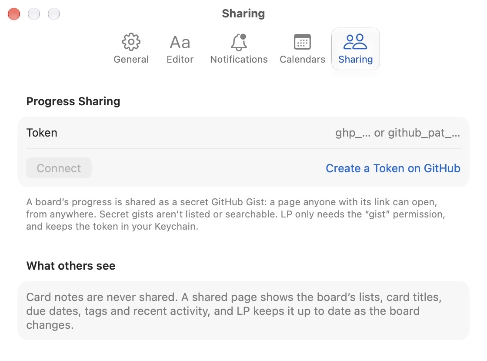
The page updates by itself as the board changes (Keep up to date automatically), or click Update Now. Stop Sharing deletes the page, and its link stops working.
LP only updates pages that this Mac published. If a board's page was shared from another Mac, from LP 1.0.0, or by whoever gave you the folder, the progress panel says it was set up somewhere else and changes nothing until you choose:
A copy of a board never updates the original's page.
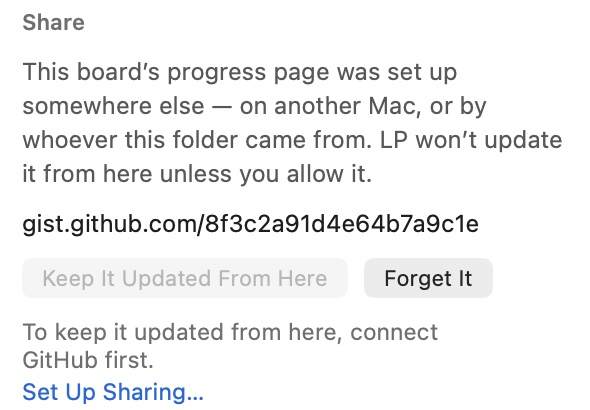
LP reminds you on the day things are due, before your meetings, and each morning with a summary of your day — even when LP is closed.
📅 2026-11-20 14:30 on a to-do, Remind at a time on a card), otherwise at 9:00.Each reminder has buttons: Mark as Done (ticks the box in the note or board for you), Remind Me in an Hour and Remind Me Tomorrow. Clicking a reminder opens its page or board.
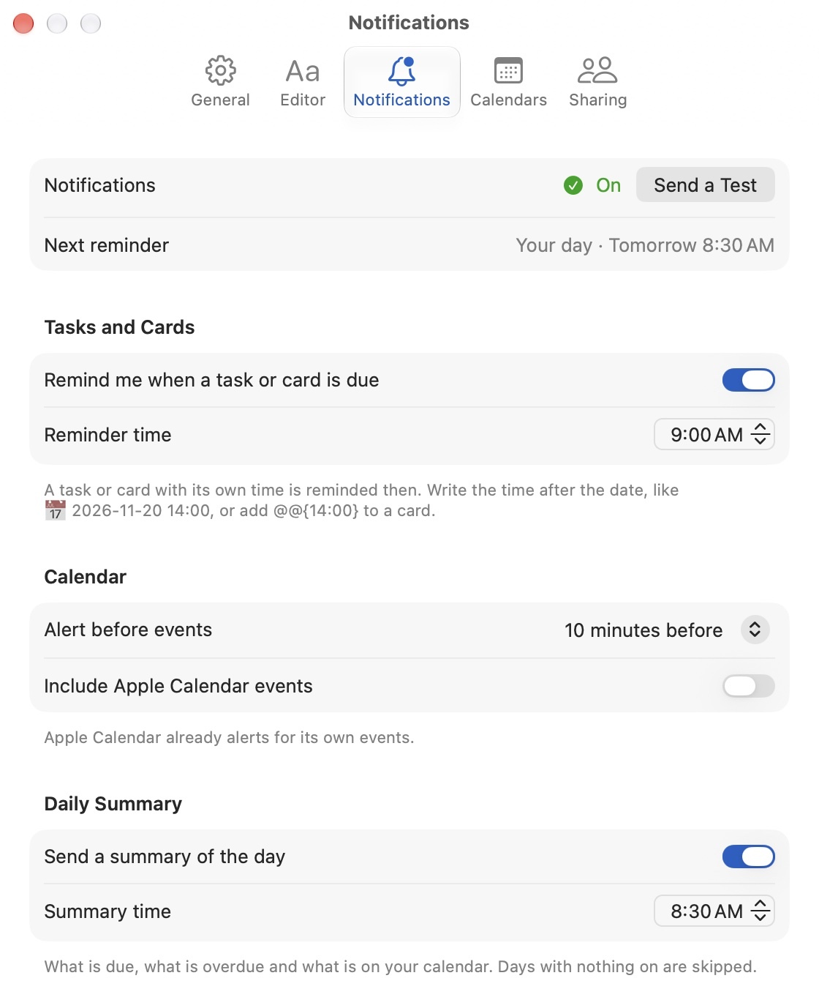
The first time there's something to remind you about, macOS asks whether LP may send notifications — click Allow. Choose what you're reminded about, and when, in Settings › Notifications. The bottom of that tab lists the reminders actually waiting, so you can check they're set up.
Keep your day and your projects in view on the desktop or in Notification Center.
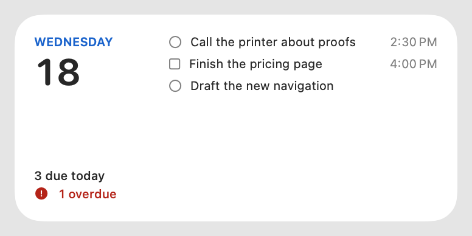
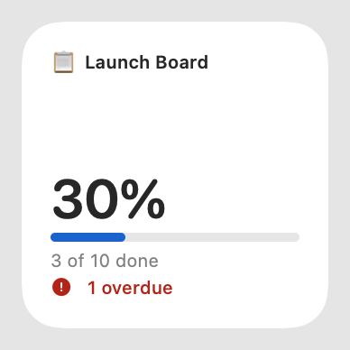
Click the date and time in the menu bar, scroll down and click Edit Widgets. Find LP, then drag a widget to the desktop or Notification Center.
Open Settings with ⌘ , or the gear at the bottom of the sidebar. The Notifications, Calendars and Sharing tabs have chapters of their own.
Theme (automatic, light or dark), the folder for daily notes, and your workspace folder.
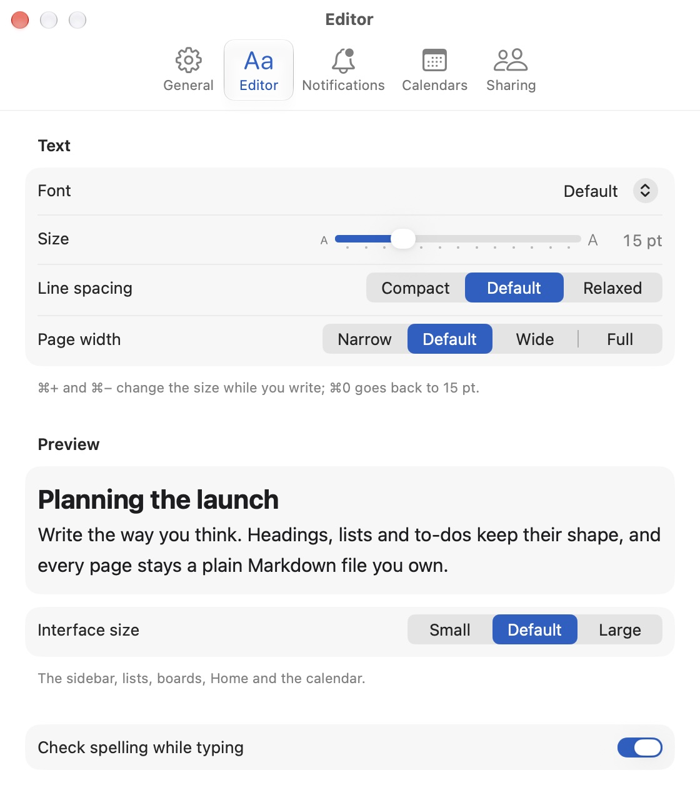
| Setting | Choices |
|---|---|
| Font | Default, Rounded, Serif, Mono — or Other, then any font installed on your Mac |
| Size | Any size from 12 to 24 points (15 is the default). ⌘ + and ⌘ − change it while you write; ⌘ 0 goes back to 15 |
| Line spacing | Compact, Default or Relaxed |
| Page width | Narrow, Default, Wide or Full (the whole window) |
| Interface size | Small, Default or Large — the sidebar, lists, boards, Home and the calendar |
| Spelling | Check spelling while typing |
The page's ••• menu has the same font, size, spacing and width choices.
The full list is also in LP's menus.
| ⌘ N | New page | ⌘ K · ⌘ P | Search · Quick open |
| ⌥ ⌘ N | New board | ⌘ T | Today's note |
| ⇧ ⌘ N | New folder | ⌘ 1 2 3 | Home · Calendar · Boards |
| ⌘ O | Open a workspace | ⌘ [ · ⌘ ] | Back · Forward |
| ⌘ , | Settings | ⌘ + − 0 | Bigger · smaller · default text |
| ⌘ B · ⌘ I | Bold · italic | ⇧ ⌘ X | Strikethrough |
| ⇧ ⌘ C | Code | ⇧ ⌘ H | Highlight |
| ⌘ K | Link the selection | ⌘ Return | Tick a to-do off |
| ⌥ ⌘ 0 | Turn into text | ⌥ ⌘ 1 2 3 | Heading 1, 2, 3 |
| ⌥ ⌘ 4 | To-do list | ⌥ ⌘ 5 · 6 | Bulleted · numbered list |
| ⌥ ⌘ 7 | Quote | ⌥ ⌘ 8 · 9 | Code block · callout |
| / | Block menu (on an empty line) | [[ | Link to a page |
| Return | Open the selected card | ⌘ ← · ⌘ → | Move it to the previous · next list |
| Delete | Delete the selected card | ⌘ Z | Undo |
How LP looks after your notes, and how to update — or go back to an earlier version.
Notes can come from anywhere, so LP is careful with them. Links to apps, scripts or installers never run — LP shows the file in Finder instead — and links that open other apps ask first. Nothing in a note can make LP read or write outside your workspace folder.
| What | Where |
|---|---|
| Notes and boards | .md files in your workspace folder |
| Images you paste | The workspace's attachments folder |
| Board history | A hidden .lp folder in your workspace |
| Recovered copies of edits | LP's own folder on your Mac, never your workspace — the alert's Show in Finder opens it |
| Which shared pages this Mac updates | LP's settings on this Mac |
| Calendar and sharing tokens | Your Mac's Keychain |
| Events from Google and Microsoft | LP's own folder on your Mac (Apple Calendar's stay in macOS) |
LP has no servers, no accounts, no analytics and no tracking — nobody, including the people who make LP, receives your notes or anything about how you use it. LP goes online only for what you use:
Disconnect in Settings › Calendars removes an account from LP, and for Google also asks Google to end LP's access. To be thorough, check your account's list of connected apps too (Google Account › Third-party connections; Microsoft account › Apps and services). The details are in the Privacy Policy and on the Connected Accounts page of LP's website, ltf-git-dev.github.io.
LP is free, open-source software under the MIT License (© 2026 LTF-Git-Dev). The repository has its LICENSE, Privacy Policy (PRIVACY.md), Terms of Use (TERMS.md), Cookie Policy (COOKIES.md — LP uses none), accessibility statement (ACCESSIBILITY.md) and security policy (SECURITY.md). The policies are also on LP's website, ltf-git-dev.github.io, with the support address for questions.
Each version of LP is published on the Releases page with its app. A new version is only released after you've approved it, and the versions before it stay there, so you can go back at any time (developers: Scripts/rollback.sh, see the README):
With LP's connector for Claude, Claude Code and the Claude desktop app can work with your notes: “What's overdue?”, “Add today's standup to my daily note”, “Move the press release card to Review”. It works on your folder directly, on your Mac only. To turn it on, open Settings › General › LP with Claude and follow its four steps — each has a short command with a Copy button to paste in Terminal — then start a new Claude Code session (for the Claude desktop app, follow the steps at github.com/LTF-Git-Dev/local-productivity/blob/v1.0.2-beta.1/docs/MCP.md).
This can happen after installing a new version that's signed differently. Choose the same folder — nothing in it is changed.
Open System Settings › Privacy & Security and click Open Anyway next to the message about LP.
Check System Settings › Notifications › LP and turn on Allow Notifications. In LP, Settings › Notifications shows whether notifications are on and which reminders are waiting. Focus modes can also hold notifications back.
See chapter Widgets: LP needs to be signed with your Apple ID team once.
A work or school Microsoft account may need its organisation's approval — ask your IT department, or add the account in System Settings › Internet Accounts and connect Apple Calendar instead. If you use your own client ID (Settings › Calendars › Use Your Own Client ID), check it: a Google one must be of the iOS type, and a Microsoft one needs the iOS / macOS platform.
Google Drive: the message says what's missing. If the Google Drive API isn't turned on (only with your own client ID), turn it on in that client ID's Google Cloud project. If LP isn't allowed to use Drive, click Allow Google Drive… in Settings › Sharing again and keep the Drive permission ticked on Google's page. If the page's Google account isn't connected, connect it in Settings › Calendars.
GitHub: the token must have the gist permission and must not have expired. Disconnect and connect a new token in Settings › Sharing.
Use ⌘ + / ⌘ − in a page, Settings › Editor › Size, or Interface size for the rest of LP.
LP notices and shows the new version. If you were editing the same note in LP at that moment, LP saves your edits and keeps the other app's version as a copy in its Recovered folder — an alert tells you, with Show in Finder.
Google, Microsoft and GitHub limit how often an app may call them. When one of them says “too many requests”, LP waits as long as it asks — never more than an hour — shows until when (next to the account in Settings › Calendars, or in a board's progress panel), and then carries on by itself. Until then LP sends that service nothing, so a change you try to a calendar in the meantime is turned down — make it again afterwards. If one keeps asking about a shared board, its automatic updates pause until your next change or Update Now.
Yes. While LP is running and online, it syncs your Google and Outlook calendars in full about every half hour — from a year back to two years ahead, plus any other months you open — and keeps that copy on your Mac until you disconnect the account. So your calendar shows offline, on a train or a plane, and reminders still come. While offline you can't change events: LP says so and puts the event back as it was, so make the change again once you're online. (The Sync button in the calendar syncs everything at once.) Apple Calendar works fully offline, changes included, because macOS keeps it: if you want that for Google or Outlook too, add the account in System Settings › Internet Accounts and connect Apple Calendar in LP instead.
LP couldn't read the file — it may be locked, or not text. Fix that (in Finder, Get Info shows its permissions) and click Try Again. LP never writes over a page it couldn't read.
Before LP renames or moves a board, it writes the board's ID into the file so its history and sharing follow it. If the file can't be read or written — it's locked, or saved in an encoding other than UTF-8 — or its history in the hidden .lp folder can't be updated, LP leaves everything where it was. Unlock the file (or the .lp folder), or save it as UTF-8 in a text editor, and try again. If it says the board changed in another app meanwhile, simply try again.
See A page shared from somewhere else in chapter 7. Pages shared from LP 1.0.0 need Keep It Updated From Here once.
LP's website, ltf-git-dev.github.io, has the policies. In the repository, the README covers LP's features and development and CODEX.md how it's built.